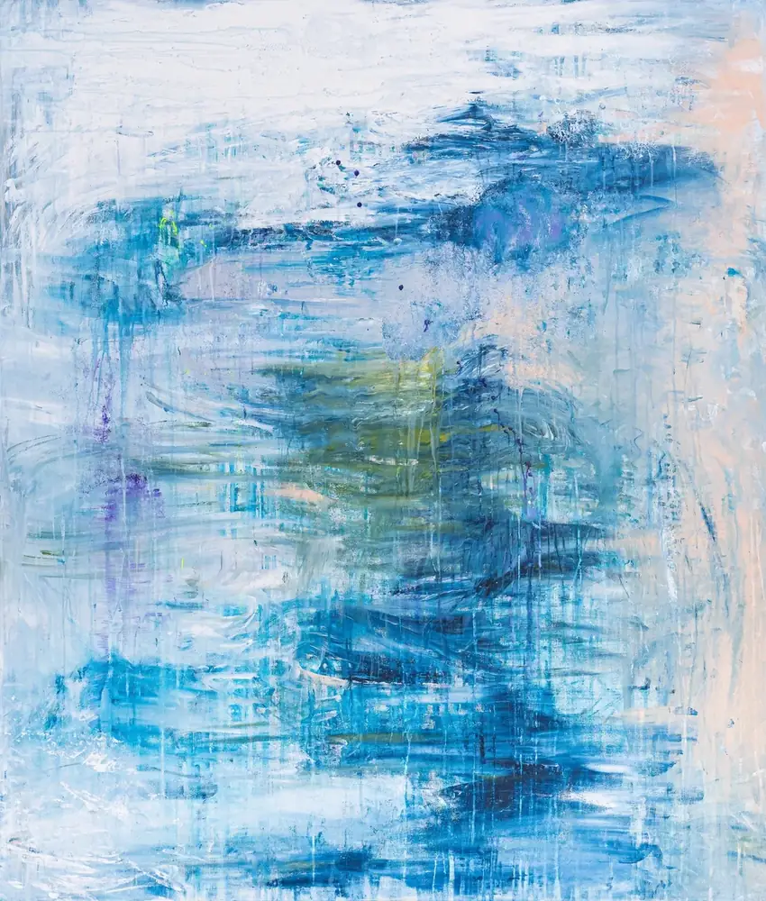

Entwurf auf Grundlage der bisherigen Website. Textstellen mit goldener Linie sind Vorschläge, noch nicht von Charlotte freigegeben.
Charlotte
Menü
Generative Painting
Coaching
Teams
Kunst
Über mich
Zur Galerie

dancing hang traces
Maße
120 × 140 cm
Technik
Acryl auf Leinwand
co-improv
Preis anfragen
‹
free spirit
the big embrace
›